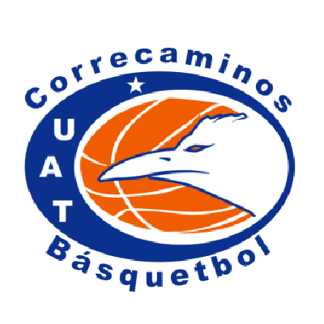

Anio de Fundación: 2000
Ciudad: Ciudad Victoria, Tamaulipas
Estadio: Gimnasio Multidisciplinario UAT Victoria
Capacidad: 3,500
Sitio web: https://www.lnbp.mx/Correcaminos/

CNMB
| Escudo |
|---|
|  |
| Datos |
| Nombre: Correcaminos UAT Anio de Fundación: 2000 Ciudad: Ciudad Victoria, Tamaulipas Estadio: Gimnasio Multidisciplinario UAT Victoria Capacidad: 3,500 Sitio web: https://www.lnbp.mx/Correcaminos/ |
| Historia |
| Informacion no encontrada |
| Estadio |
|